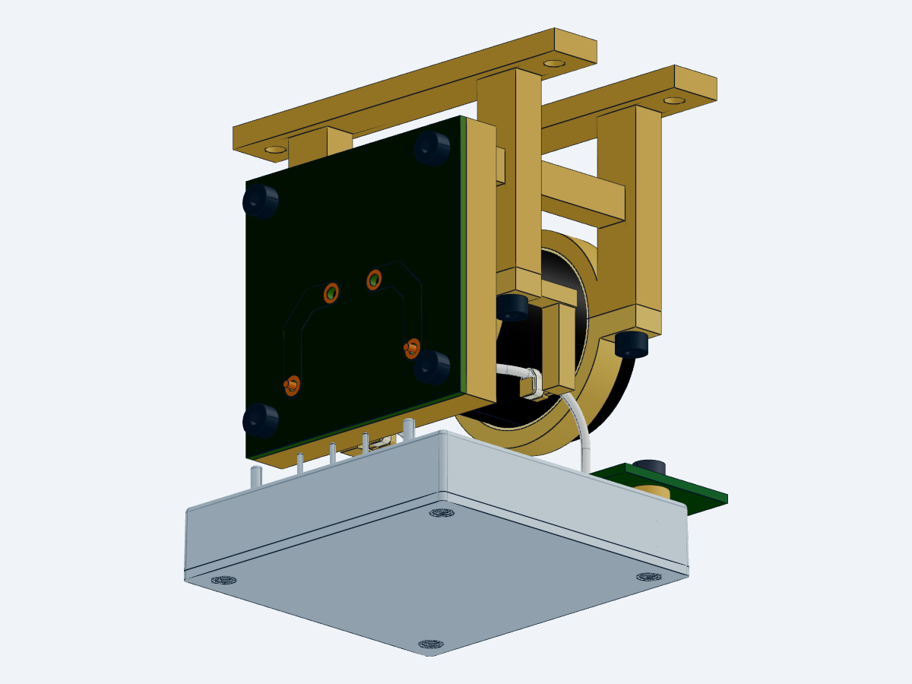

内存清理达标后，已完成新固定座、两条带环包络及局部装配的串行生成。整机详细设计仍有开放项。
交互查看装配 · 下载装配 STEP · 下载固定座 STEP · 33 行安装 BOM

当前 STEP 原生检查 34 个层级实例，0 失败。导线、鞍座及带环的局部名义接触已核验；部分零件被遮挡。
原理图和 PCB 源未变，沿用源哈希一致的 V20 ERC／DRC 结果；本轮未重跑电气检查。停止／回生、整星散热、电池／PMM及推进同修订接口继续保持开放。
最后封装发布仍为 V18，原 37 行状态保持。本轮 STEP 是 SolidWorks 可导入几何。